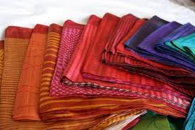
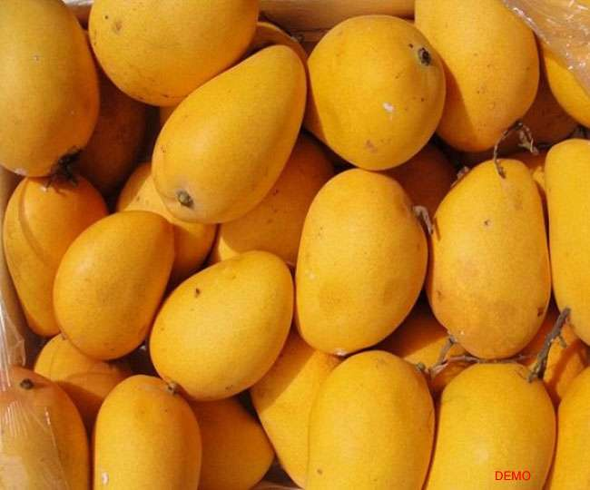

Madhubani Paintings

Origin: Madhubani District, Bihar
Description: Madhubani paintings are traditional folk art characterized by intricate geometric patterns, vibrant colors, and themes from Hindu mythology and nature.
Technique: Painted with natural pigments using fingers, twigs, brushes, nib-pens, and matchsticks.
GI Tag Year: 2007
Bhagalpur Silk
Origin: Bhagalpur, Bihar
Description: Bhagalpur silk, also known as Tussar silk, is produced from wild silkworms. It has a natural golden luster and coarser texture compared to regular silk.
Characteristics: Natural golden color, durable, breathable, and has a unique texture.
GI Tag Year: 2007
Jardalu Mango
Origin: Bhagalpur, Bihar
Description: Jardalu mango is a unique variety known for its small size, sweet taste, and aromatic fragrance. It's considered one of the finest mango varieties in India.
Characteristics: Small size (50-60 grams), golden yellow color, sweet taste with rich aroma.
GI Tag Year: 2018
Silao Khaja

Origin: Silao, Nalanda District, Bihar
Description: Silao Khaja is a traditional sweet made from refined wheat flour, sugar, and ghee. It's crispy, flaky, and has a unique taste and texture.
Process: Made with a special technique of layering and deep frying to achieve its characteristic flaky texture.
GI Tag Year: 2018